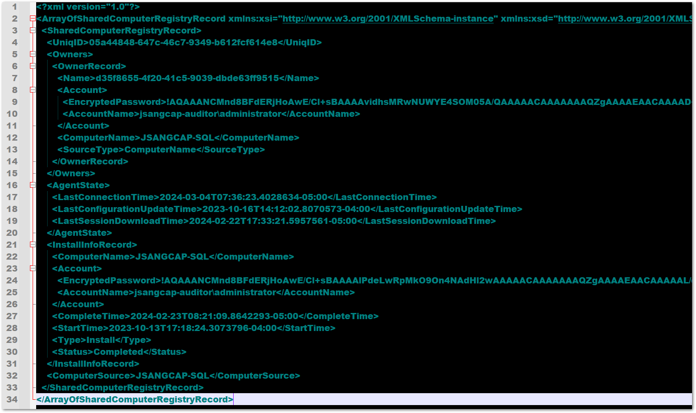

Question
How to exclude a non-operable or decommissioned domain controller from monitoring?
Answer
To exclude domain controllers from monitoring, refer to the following steps:
-
Navigate to the %Working Folder%.
The default path to Netwrix Working Folder is: C:\ProgramData\Netwrix Auditor. If the Working Folder has been moved and you do not know the path, you can find it by opening the Registry Editor and navigating to:
Computer\HKEY_LOCAL_MACHINE\SOFTWARE\WOW6432Node\Netwrix Auditor\DataPathOverride
NOTE: The
Inactive Users Trackerfolder might not exist in the%working folder%directory if Inactive Users Tracker was not deployed. -
Open the omitdclist.txt file and specify the name of the domain controller you want to exclude in a new line.
NOTE: Make sure the line does not start with the # symbol.
Refer to the following code block for a reference:
# DC name formats: full DNS and NETBIOS. IP addresses are not supported. # e.g. # dc1.example.com # MYDC.MYDOMAIN.LOCAL
 -
Save the changes. Inactive User Tracker will exclude this domain controller.
Refer to the following article for additional information: Monitoring Plans — User Activity Monitoring Scope — v10.6.